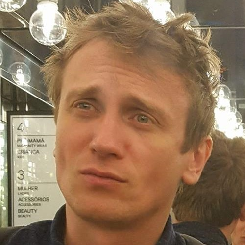

I am an outgoing and energetic person, seeking a career that fits my professional skills, personality,
endless urge to investigate and learn.
- Experience
-
DMG Mori-Heitec as Senior Software Engineer2020 Aug - present
- Project: Implementation of a Kubernetes based Infrastructure for Istos
- Technologies: Azure, K8s(AKS), Helm, Helmsman
- Languages: bash, Java(Quarkus)
- Version Control: Bitbucket + Jenkins + Tekton
Evosoft as Chief Infrastructure Engineer2017 Aug - 2020 Aug
- Project: Design and implementation of AWS Infrastructure for MindSphere 3
- Technologies: Terraform + AWS VPC, ECS, ALB, Route53, S3, ...
- Version Control: Git + Gitlab CI
- Leading the Infra Engineers of 9 teams
- I'm proud of implementing Blue/Green deployment (a.k.a Mayflower)
Evosoft as Infrastructure Engineer2016 Oct - 2017 Aug
- Project: Redesign the CI pipelines of MindSphere 2
- Technologies: Docker, Redis, PostgreSQL, MySQL, RabbitMQ
- Version Control: Git + Gitlab CI
- I'm proud of replacing our old TFS + Jenkins based pipelines with a Docker based Gitlab CI for 180+ repos
- Designing and leading the development of our monitoring infrastructure based on Prometheus/PagerDuty/Grafana
Evosoft as Key Developer 2014 Apr - 2016 Oct
- Project: Design and implementation of MindSphere 2, an Industrial Internet of Things platform for the Digitalization department of Siemens AG
- Languages: Java, JavaScript, TypeScript
- Technologies: Microservices, REST, Spring Boot, Cloud Foundry, Gradle, Grunt, Karma, TestNg, Pact
- Methodologies: Scrum like, Pair programming, TDD
- Version Control: TFS + Git
- I'm proud of introducing TypeScript in our front-end project
Evosoft as Java Architect 2005 Nov - 2014 Apr
- Project: Design and implementation of an Eclipse based railway editor for the Railway Automation department of Siemens AG
- Languages: mainly Java, some XTend, HQL, SQL
- Technologies: Eclipse RCP, EMF, GEF, Hibernate, Jasper Reports
- Version Control: Clearcase
- I'm proud of introducing the notion of Continuous Integration in the project: CruiseControl --> Hudson --> Jenkins
- Won the EvoRace (internal programming contest) in 2009, third place in 2010
- Promoted as Architect in 2010
Eklos SA as C# Developer2004 - 2005
- Projects: Eklos as a Romanian-Italian company, we were designing and implementing 3-4 production tracking applications for GUCCI
- Languages: C#, J#, VB.Net
- Technologies: WinForms, ASP.Net
- Version Control: Visual SourceSafe
MaxIQ SRL as Delphi/Java Junior Developer2001 - 2004
- Projects: internal custom applications for RomTelecom Bihor
- Languages: first in Delphi, then porting them to Java J2EE
- Technologies: Delphi RAD, JBoss, JSP, Oracle, Maven
- Version Control: CVS, SVN
- Education
-
University of Oradea 2003 - 2005
Faculty of Electrotechnics and Computer Science
MSc: Project Management
University of Oradea 1998 - 2003
Faculty of Electrotechnics and Computer Science
BSc: Computer Science
- Languages
-
Hungarianmother tongue
Romaniannative
Englishfluent
Germanbasic
- References
-
British Council Cambridge FCE
coursera.org Functional Programming Principles in Scala by M. Odersky
coursera.org Principles of Reactive Programming by M. Odersky et co
coursera.org Programming Languages by D. Grossmann
github.com/karandit
- Side projects
-
TerramakeType-safe Infrastructure-as-Code (elm + terraform)
Plank-o-meterKeeping track of the planks of employees (elm)
ConfettiTimetable generator for schools, high schools, universities (java)
REST DojoA lean poker clone (elm + java)
- Hobbies
-
Continuous learningvim, touch typing, haskell, scala, elm, kotlin, idris, freebsd
Sportsrock bouldering/climbing, riding my GAUS wheel bike, dad
{kind=link}